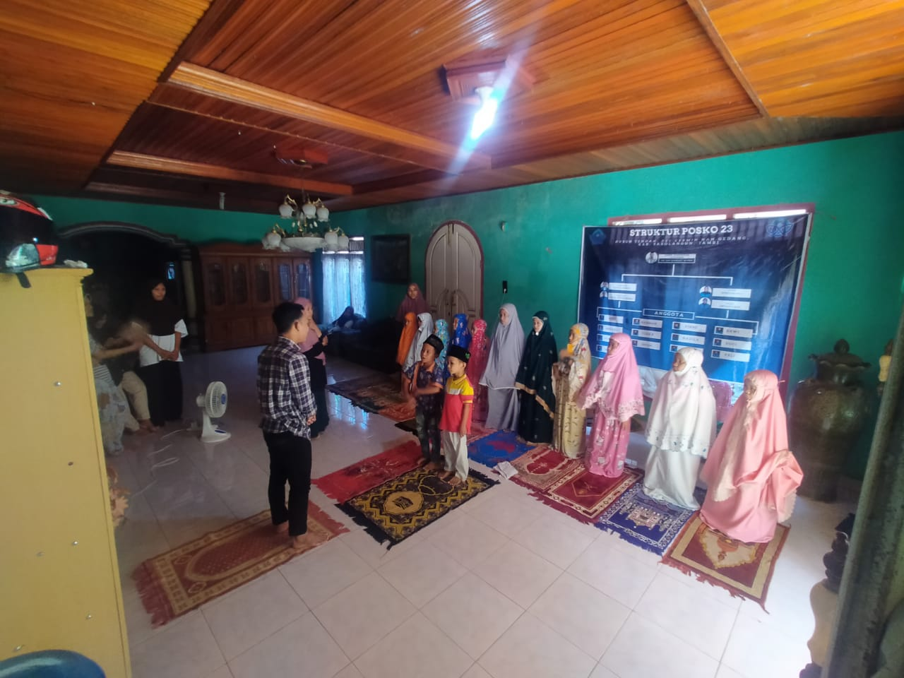

Alhamdulillah pada tanggal 3 juli 2022 Desa Tendah Kecamatan Cerminan Gedang Kabupaten Sarolangun, mendapatkan tamu yaitu mahasiswa/i KKN UIN Sultan Thaha Saifuddin Jambi yang insyaallah akan memberikan perubahan positif di desa Tendah yang kita cintai ini.
Karena sudah lama desa Tendah tidak mendapatkan kunjungan dari mahasiswa KKN UIN Sultan Thaha Saifuddin t sejak 4 tahun terakhir.
Kami berharap kedatangan mahasiswa dari UIN bisa membuat perubahan² yang membuat desa kami menjadi lebih baik untuk kedepannya dengan ilmu-ilmu yang mereka miliki.
Program kerja mahasiswa KKN posko 23 di Desa Tendah
-
Membuat Website desa
-
Mengajar Mengaji

-
Mengajar Sholat
 -
Senam bersama ibu-ibu desa Tendah
-
Membuat Toga di kantor Desa
-
Membuat plang ucapan selamat datang di jembatan penyebrangan dan plang ketua RT dan tokoh adat setempat
-
Festival islami dalam rangka memperingati 1 muharram 1443 H